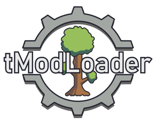

Добро пожаловать в мир tModLoader!
tModLoader ( tML ) — бесплатная программа, позволяющая играть в
Terraria
с
модами
. С ее помощью можно загружать моды из базы данных, называемой Mod Browser , получать обновления модов, если таковые имеются, или загружать собственные моды в Mod Browser. Она была разработана и выпущена командой tML как отдельная программа, а также может быть получена в Steam как Terraria
DLC
. Официальную вики с информацией о создании модов и использовании tModLoader можно найти на
GitHub.
Обычная,
« ванильная »
Terraria и tModLoader полностью разделены, так как базовая игра включена в tModLoader и настроена для моддинга. Поэтому версия Terraria от tModLoader обновляется отдельно от ванильной игры. Из-за огромного количества изменений в обновлении
1.4.0.1
(Journey's End) и снова в
1.4.4
, которые потребовали фундаментальных изменений в измененной базовой игре, существует три «варианта» tModLoader: один, основанный на
Terraria 1.4.4.9
(«1.4.4-stable»), один, основанный на
Terraria 1.4.3.6
(«1.4.3-legacy»), и один, основанный на
Terraria 1.3.5.3
(«1.3-legacy»). Моды, доступные в одном варианте, могут быть недоступны в другом варианте.
В этой вики вариант 1.4.4.9 считается частью
версии для настольных компьютеров
, тогда как устаревшие варианты 1.4.3.6 и 1.3.5.3 игнорируются. Настольная версия
Хотя tModLoader одобрен Re-Logic , ни один из загружаемых через него модов не одобрен официально, и поэтому к нему следует относиться так же, как и к любому другому стороннему программному обеспечению.